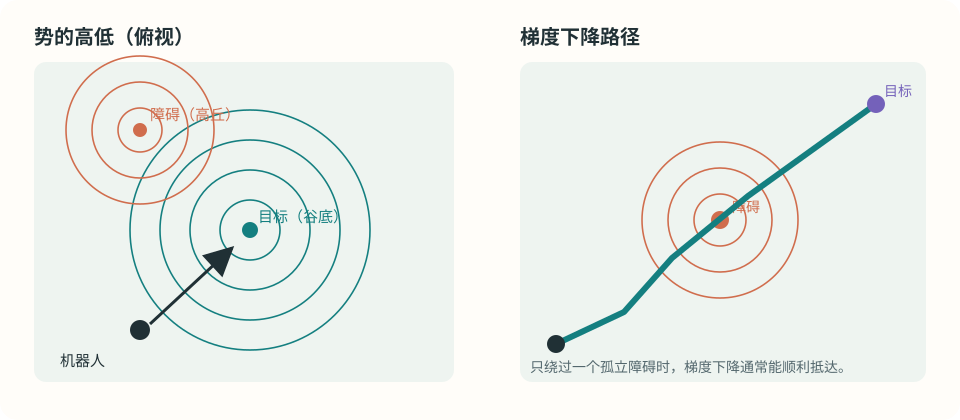
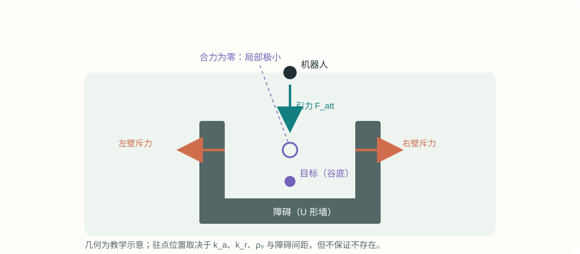

人工势场法 APF：顺着虚拟力下滑，会在哪里停住？
DWA 在速度空间里搜索、评分；APF 换了一条完全不同的路——把目标和障碍变成一个标量势场，机器人只沿负梯度方向运动。它极快、极简，但也藏着一个决定性缺陷：局部极小。
不搜索，顺着坡度滑
设机器人在平面上的位置为 q。APF 不去采样候选轨迹，也不做图搜索，而是构造一个标量函数 U(q)，让目标处势能最低、障碍附近势能急剧升高。机器人受到的“虚拟力”是势的负梯度 F(q) = −∇U(q)，它只需朝这个方向迈出一步。
这是一种梯度下降：像在浓雾里下山，看不到全局，只能感受脚下坡度朝低处走。优势是每步只需计算局部梯度，开销极小；代价则是——如果地形里有一个比目标更高、又不是全局最低的“小坑”，机器人会卡在那里。
先看一个反例：若机器人与目标之间有一道U形障碍，机器人会受到目标引力（拉它进U形）与两侧壁障力（往外推）的共同作用。两者在某点相互抵消，合力为零，机器人以为“到了”，实际却被困在U形底部。这就是本章要反复强调的局部极小。
APF · 17

引力与斥力：势场公式
APF 由 Oussama Khatib 在 1986 年的实时避障工作中提出。他把机械臂/移动机器人看作在势场中受力的质点，势场由目标引力与障碍斥力叠加：U(q) = U_att(q) + U_rep(q)。
引力势场随到目标距离平方增长，离目标越远引力越大：
斥力势场只在障碍影响半径 ρ₀ 内不为零，越贴近障碍升得越快：
要注意量纲与方向：斥力大小随 ρ → 0 以 1/ρ² 发散，因此严格来说要在障碍表面附近做限幅，否则靠近时力会趋于无穷、步长失去意义。另外，下面代码里用 (q − q_obs)/ρ 代表 ∇ρ 的方向，只对圆形/点障碍成立；对一般形状障碍，需要按真实距离场求梯度。
局部极小：APF 的固有缺陷
梯度下降只能保证停在某个势的驻点，不能保证是全局最低点。若目标位于凹形障碍（U 形墙、房间角落、密集障碍群）之后，目标引力会把机器人往里拉，而障碍斥力把它往外推；当两者大小相等、方向相反时，合力为零：
这个平衡点不是孤立地出现在 U 形障碍里。狭窄通道两侧壁障力相互抵消、障碍贴近目标导致目标不可达（GNRON 问题）、对称环境里两边斥力正好对消——这些都会产生局部极小或持续振荡。
APF · 17

局部极小是方法本身几何性质带来的，不是“再调调 k_a、k_r、ρ₀”就能消除的。调参只能移动或缩小吸引域，不能保证没有驻点。这也是 APF 很少单独作为完整导航器的原因。
改进思路：能否消除驻点
研究者提出过几类基础上的改造，目的都是“让下降路径不再卡在非目标驻点”：
- 切向/旋转势场：在径向斥力上叠加一个沿障碍表面的切向分量，让机器人“滑过”障碍而不是正面顶住。它能缓解对称平衡，但切向方向的选择要避免引入新的循环轨迹。
- 调和势场：用拉普拉斯方程
∇²U = 0的解构造势，边界上目标取低值、障碍取高值。调和函数在区域内部没有局部极小（极值只能出现在边界）。代价是需要有限差分/边界元等数值求解，实时性较差，且若区域不与目标连通仍可能不可达。 - 导航函数（Navigation Functions）：Koditschek 与 Rimon 提出的一类可证明无局部极小的势函数，但需要工作空间与障碍满足特定假设（如障碍可膨胀为球/星形），真实环境不一定满足。
- 把 APF 降为局部模块：最常见也最稳妥的工程做法——用全局规划器（A*、RRT 等）提供宏观引导，APF 只在局部做平滑避障/扰动补偿，而不单独承担完整导航。
有个共同前提要记住：这些改造的“无局部极小”保证都附带了区域形状、障碍形状或连通性的假设。脱离假设单独引用结论，就容易高估方法能力。
交互：同一势场，不同起点
下图使用固定的 U 形障碍与目标，只改变机器人的起始位置。三个按钮对应三条已经算好的梯度下降轨迹：从两侧进入能沿壁面滑入目标，从正上方进入则卡在开口的局部极小。
从左侧进入：斥力把机器人沿壁面导向目标，成功到达。
三条轨迹为教学示意，由固定参数下的一次运行得到；参数改变会移动局部极小位置，但不会保证其消失。
可运行的最小 APF（Python 3.10+）
下面用标准库实现点机器人 APF。假设：障碍是圆形（用圆心与半径隐含的距离表示），机器人按归一化合力方向以固定步长移动。第一部分是引力、斥力与总力：
import math # Python 3.10+
def attractive(q, goal, ka=1.0):
"""引力 = -ka·(q - goal)，指向目标。"""
return [-ka * (q[0] - goal[0]), -ka * (q[1] - goal[1])]
def repulsive(q, obstacles, kr=1.0, rho0=2.0):
"""斥力：仅当到障碍距离 rho < rho0 时非零，方向远离障碍。"""
fx = fy = 0.0
for ox, oy in obstacles:
dx, dy = q[0] - ox, q[1] - oy
rho = math.hypot(dx, dy)
if 1e-6 < rho < rho0:
mag = kr * (1.0 / rho - 1.0 / rho0) * (1.0 / rho ** 2)
fx += mag * dx / rho
fy += mag * dy / rho
return [fx, fy]
第二部分是梯度下降主循环。样例输入两个：开阔环境起点 (0,0)、目标 (4,0)；以及目标前方放一个障碍点的对称案例。运行 python3 apf_demo.py，断言应当全部通过。
def plan(start, goal, obstacles, ka=1.0, kr=1.0, rho0=2.0,
step=0.05, max_steps=4000, goal_tol=0.1):
q = [float(start[0]), float(start[1])]
goal = [float(goal[0]), float(goal[1])]
path = [tuple(q)]
for _ in range(max_steps):
fa = attractive(q, goal, ka)
fr = repulsive(q, obstacles, kr, rho0)
fx, fy = fa[0] + fr[0], fa[1] + fr[1]
n = math.hypot(fx, fy)
if n < 1e-9:
break # 合力为零：驻点
q = [q[0] + step * fx / n, q[1] + step * fy / n]
path.append(tuple(q))
if math.hypot(q[0] - goal[0], q[1] - goal[1]) < goal_tol:
break
return path
# 1) 开阔环境：应到达目标（4,0）附近
free = plan((0.0, 0.0), (4.0, 0.0), [], ka=1.0, kr=1.0, rho0=2.0)
assert math.hypot(free[-1][0] - 4.0, free[-1][1]) < 0.1
# 2) 障碍直接在起点与目标之间：力在轴上相消，机器人停在目标前方
stuck = plan((0.0, 4.0), (0.0, 0.0), [(0.0, 2.0)], ka=1.0, kr=1.0, rho0=3.0)
d = math.hypot(stuck[-1][0], stuck[-1][1])
assert d > 0.5, "应在局部极小附近停住，而不是到达目标"
print(f"free reached goal; blocked case stopped {d:.1f} m from goal")
# => free reached goal; blocked case stopped 2.7 m from goal
第二个案例里机器人一直停在目标前方约 2.7 m，并在该点附近小幅往返（步长固定导致的过冲）。这正是局部极小在数值上的表现：合力方向无法再降低总势能。注意这一例子沿对称轴对称，是最“干净”的退化情形；实际环境中局部极小与振荡常共存。
边界条件与选型
APF 的能力和风险都来自它的机制，把它与 DWA 放在一起看更清楚：
| 维度 | APF | DWA |
|---|---|---|
| 决策变量 | 位置处的合力方向 | 速度空间中的 (v, ω) |
| 每步开销 | 与障碍数相关，通常更低 | 与采样数×预测步数相关 |
| 动力学约束 | 不直接建模 | 显式进入动态窗口 |
| 局部极小 | 方法固有的主要弱点 | 也会发生，但可由全局引导缓解 |
| 势/力奇异 | 贴近障碍时斥力发散，需限幅 | 不依赖力的奇异 |
几个必须写清的边界条件：
- 完备性：APF 不提供到达目标的完备性保证；存在不可达的局部极小就等于失败。
- 固定步长会振荡：梯度下降的步长过大时，机器人会在驻点两侧往复过冲，而不是稳定停下。
- 力的限幅：斥力在障碍表面发散，实现时要对合力大小做上限，否则单步位移失去物理意义。
- 调参不消除驻点：改变
k_a、k_r、ρ₀只会移动吸引域，不会把局部极小变成不存在。
若要用于真实系统，一个稳妥的选择是把 APF 作为局部避障/平滑模块，由全局规划器提供宏观方向；不要让它单独承担复杂环境中的完整导航。
来源与实现参照
- Khatib (1986), Real-Time Obstacle Avoidance for Manipulators and Mobile Robots, IJRR 5(1)——人工势场法与引力/斥力的原始定义。
- Koditschek & Rimon (1990), Robot Navigation Functions on Manifolds with Boundary——可证明无局部极小的导航函数。
- Rimon & Koditschek (1992), Exact Robot Navigation Using Artificial Potential Functions, IEEE T-RA 8(5)——导航函数的工程化表述与假设。
- LaValle, Planning Algorithms——反馈式运动规划与势场方法的背景章节。